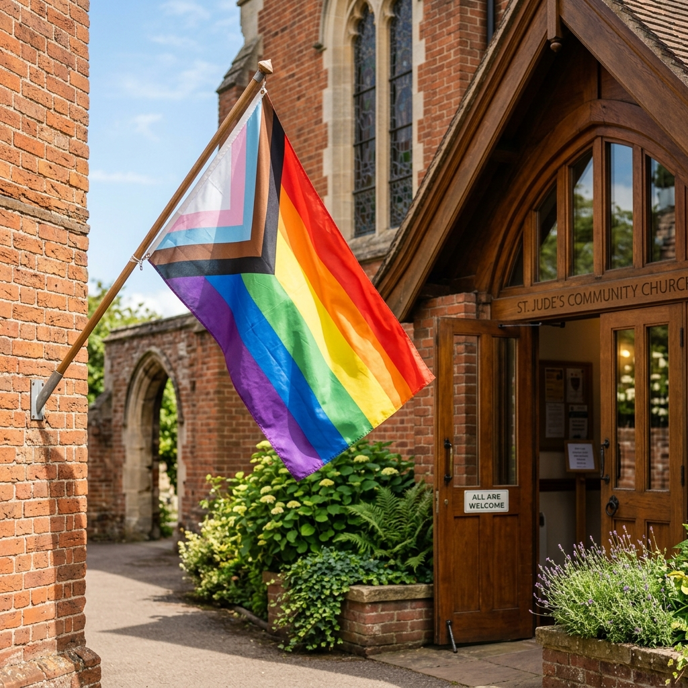
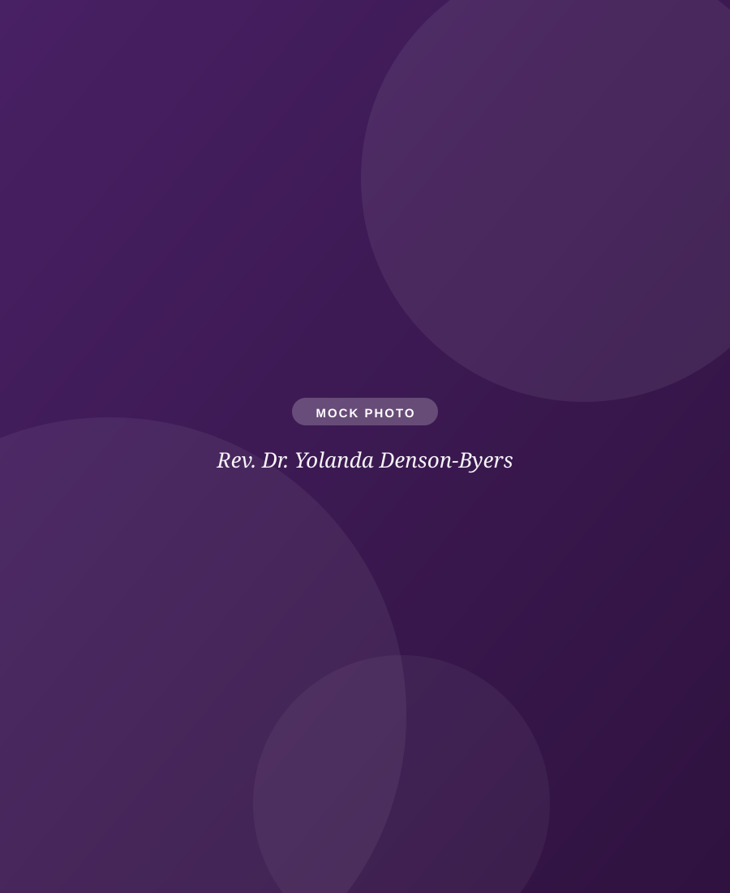

"What would my first Sunday be like?"
Parking, what to wear, communion, kids, accessibility: everything you'd want to know before walking in, with no guesswork.
Plan your visitWe love God and love neighbor in the spirit of Jesus. LGBTQ+ people, lifelong Lutherans, skeptics, young families, and elders all belong here, in worship, friendship, learning, and service. Come as you are. We mean it.
Start here
Visiting a church website usually means you're looking for something specific. Pick the question that sounds like yours.
Parking, what to wear, communion, kids, accessibility: everything you'd want to know before walking in, with no guesswork.
Plan your visit
Yes. Read our welcome statement and what we believe, including what inclusion means here for LGBTQ+ people and everyone else.
Read our welcome
Lutheran liturgy with heart: music from gospel to traditional, honest preaching, open communion, and worship you can join on Zoom.
See worship detailsMeet our pastor
Pastor Yolanda has served in parish, hospice, hospital, prison, and campus ministry for more than 25 years. She holds an M.Div. from Harvard and a D.Min. from Luther Seminary, and is the author of See Me, Believe Me.
"You don't have to have faith figured out to belong here. Bring your questions, your doubts, and your whole self — that's exactly who Jesus welcomed."

This week at SOTH
Worship with communion at 9:30, coffee and conversation at 10:30. Current series: Hearts on Fire.
Fellowship meal at 6:30 (hot dogs and vegan options over the fire), all-ages outdoor worship with communion at 7:00, s'mores at 7:30.
Pastor-led conversation on the coming Sunday's scripture. Coffee at 9:30, study at 10:00. Newcomers always welcome.

For families
The PrayGround keeps young kids connected to worship without pretending they're silent adults. Sunday School, Faith Milestones, Coffee Hour Buddies, confirmation, and youth group carry that belonging from preschool through high school.
Midweek at SOTH
Not every door into church is a Sunday morning. Around shared tables and summer campfires, we eat, pray, sing, and talk honestly, across every generation. Low pressure, high welcome.

For members
Portal, directory, giving, and the Shepherd's Voice newsletter, all in one place.
Tell us you're coming and a greeter will meet you at the door, or just show up at 9:30. Either way, you'll be welcome.